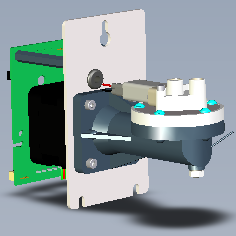
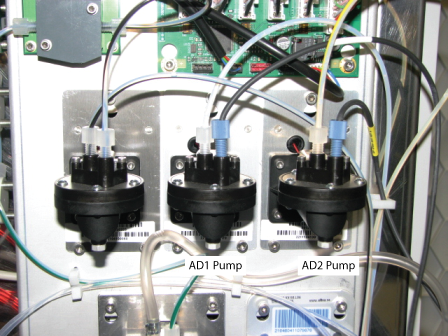
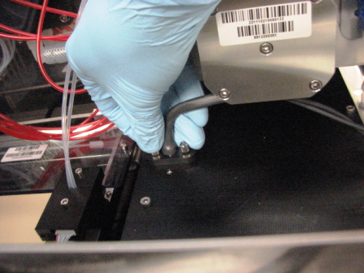
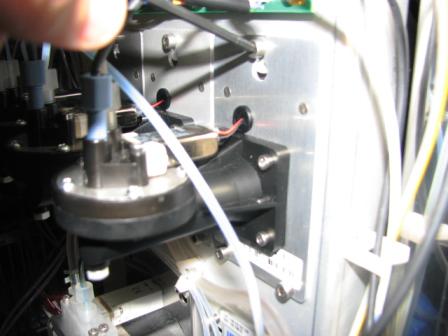
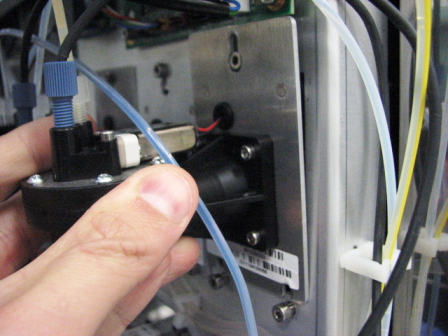
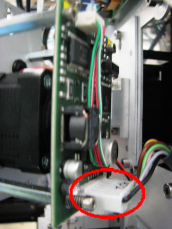
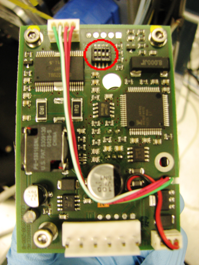

Parts and Materials Required
- Proper PPE
- Allen wrench, 3 mm
- Absorbent pad
 PUMP (OIL/AD1/AD2), LCM 500UL
PUMP (OIL/AD1/AD2), LCM 500UL

Time Required
-
Part replacement - 10mins
-
Then firmware - 30mins
-
Lumo visual dispense verification - 20mins
-
Initialization/Prime
Operation of pumping fluid through tubing to ensure proper and consistent fluid delivery (remove air from the tubing, etc.). - 20mins -
Flashcheck - 25mins
- Total ≤ 2hrs
Removal Procedure
- Put on proper PPE.
- Power down the Panther System.
- Open the right side panel door.
- Locate the Auto Detect LCMP pumps.
The AD1 Pump is located on the left and the AD2 Pump is located on the right, closest to the right cover.
- Remove the Luminometer injectors by unscrewing the two screws that secure the injectors to the Luminometer module.

- Place the injectors on an absorbent pad.
- Unscrew and remove the Luminometer injector fittings from the Auto Detect 1 and/or 2 pumps.

- Using a 3 mm Allen wrench, loosen, but do not remove, the three screws that secure the pump.
- Lift the Auto Detect LCMP pump up and slightly out to gain access to the pump power connector.

- Disconnect the Auto Detect LCMP pump power connector and remove the pump.

- Note the positions of the pump DIP switches.

- Carefully remove the LCMP.

Note—If the module will be returned, clean the module.
Replacement Procedure
- Make sure the new LCMP pump DIP switches are set correctly.
- Locate the pump DIP switches.
- Set the DIP switches on the new pump according to the following table.
DIP Switch AD1 AD2 1 OFF ON 2 ON ON 3 OFF OFF 4 OFF OFF
- Reverse the removal procedure.
- Attach the Auto Detect fluid lines.
- Place the Luminometer injector back into the Luminometer module and finger-tighten the screws.
- Close the right side panel door.
- Install Panther System firmware.
Verification
- Perform a Luminometer Visual Dispense Verification procedure.
- Prime the system (see the Panther System Operator's Manual).
- Perform a Panther Luminometer Flashcheck Verification procedure.
 button at the top of the page to send feedback, comments, or change requests.
button at the top of the page to send feedback, comments, or change requests.